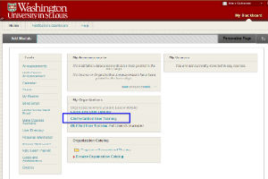
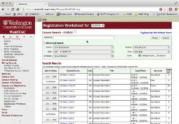

Washington University in St. Louis is one of the top universities in the nation and academics here are taken very seriously. Scroll down to learn more about the university, or click on the links below to jump to a specific section.
MEET ELIZABETH
CLASSES
BLACKBOARD/WEBSTAC
CAMPUS MAP
Elizabeth is an international student who can't wait for classes to begin. Although she is excited, Elizabeth doesn't even know how to register for her courses using Wash U's websites. DON'T BE LIKE ELIZABETH! Continue reading this page to learn about how to easily navigate academic life at Wash U.
CLASSES
- When do classes start?
- What are units and how many of them do I need?
- If I’m a transfer student, can I get credit for the courses I took at my previous institution?
Wash U has a 10 minute rule policy. This means you are allowed to show up within ten minutes of the listed course start time without being marked as late. So if you are contemplating stopping at Starbucks before class, do it. You have time. Actually no, the line at Starbucks gets ridiculous at times... Just go to class.
Units are used to denote how many credits a particular course will contribute towards a student’s graduation requirements. To be considered a full-time student, you must be enrolled in at least 12 units. While this 12-unit rule is universal to all students, each individual school at Wash U (Business, Arts & Sciences, etc.) has its own requirements on the type of units that should be completed in order to graduate.
If you want to learn about the unit requirements for your particular school, follow this link: Wustl Bulletin
Of course you can! Well, let’s clarify this. Transfer credits will only be considered if the course from your previous institution is comparable to the Wash U course that you are seeking credit for.
But wait, there’s more. In order for the credit to count, you must have received a final grade of a “C” or better. So many rules for this stuff, right? Read more about the requirements on the Wash U Admissions page.
BLACKBOARD/WEBSTAC
- What is Blackboard
- What is Webstac

Didn’t know you had reading due on the first day of class? Did you even check Blackboard? (That’s a rhetorical question, because you clearly did not check it if you didn’t know you had reading. Rookie mistake)
Blackboard is an online system that students can use to get access to valuable course information such as: a course syllabus, grades, and that lecture video you desperately need to watch because you skipped class.

Webstac is an essential tool for your Wash U life. This webpage is responsible for allowing you to search and register for classes, check your final grades and GPA, and cry at the fact that you owe the university thousands of dollars, you’re out of meal points and your parents haven’t updated your Bear Bucks account yet.
It is basically impossible to be a student here without using your Webstac account, so bookmark this page now to stay on top of things
CAMPUS MAP
- Are you lost?
We could go out of our way to design for you a fancy, 3D campus map that you can stare at as you ride around campus on your hover board. But Quick Questions does not not have the budget for that. So instead we offer you a link to a great university map that has already been created: Danforth Campus Map
Pro tip: There is a Wash U app that has a campus map on it. Use this around campus during your first week of classes so that you look like you are checking out a cool Snapchat story instead of being confused about what building you are looking for.